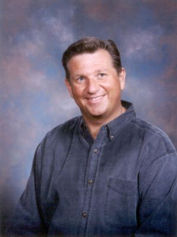

Click here for seminar
descriptions. If you are unable to view or print this page then
you may need to install
Adobe
Reader on your computer.
Some seminars are in groups, and groups are denoted by a dashed
gray box. To get the most of these seminars, it is recommended
that you attend all of the seminars in that group.
Promotional Materials
Here are some materials that can be used to promote the TRAIN 2003
Conference in your church:
Poster (designed to be printed on an
11" x 17" sheet of paper)
Brochure (designed to be printed
double-sided on an 11" x 17" sheet of paper – make
sure that the registration form on Page 1 backs onto the anniversary
message on Page 2!)
Keynote Speaker – Ed Weiss

Ed Weiss has been actively involved in ministry for 21 years. He
married Marci in 1985 and founded the non-profit organization
"Reachout Youth Ministries" to facilitate their work in campus
evangelism. Through his work with students on public school
campuses, Ed recognized that God had given him a unique ability
to communicate the truths of Scripture in a way that is simple
and often entertaining. Ed’s passion is to encourage people to
rise to their full potential in Christ. This gift has opened the
doors for Ed to speak all over the world.
For much of the last decade, Ed has been busy as an itinerant
youth speaker. As a conference speaker, Ed has enjoyed
ministering throughout Europe, Asia and South America. As Ed and
his family move into his third decade of ministry, they have
chosen to limit the amount of traveling Ed will be doing in order
to spend more time with their boys, Michael (17) and Matthew
(15), as they go through their high school years. Both of Ed’s
children love the Lord and enjoy serving him through music and
sports. For the last three years, Ed has been working as a high
school counsellor in Calgary.
Ed has completed a Masters Degree in Christian Studies at Prairie
Graduate School, and will be completing a second degree in
counseling later this year through Providence Theological
Seminary.
Hotel Accommodations for Out-of-Town Guests
For the convenience of our out-of-town guests, here is a list of hotels
near the conference location.